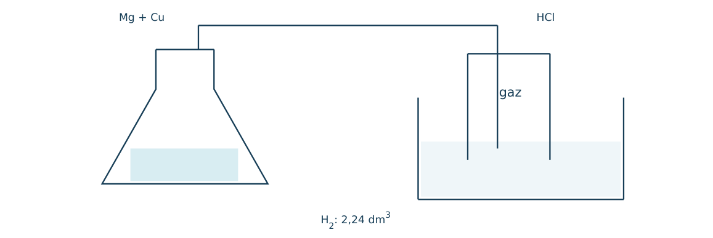
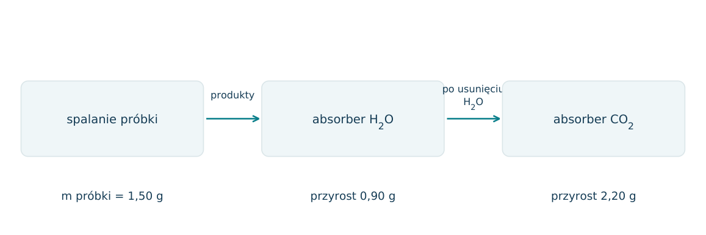
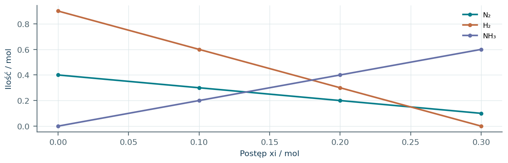
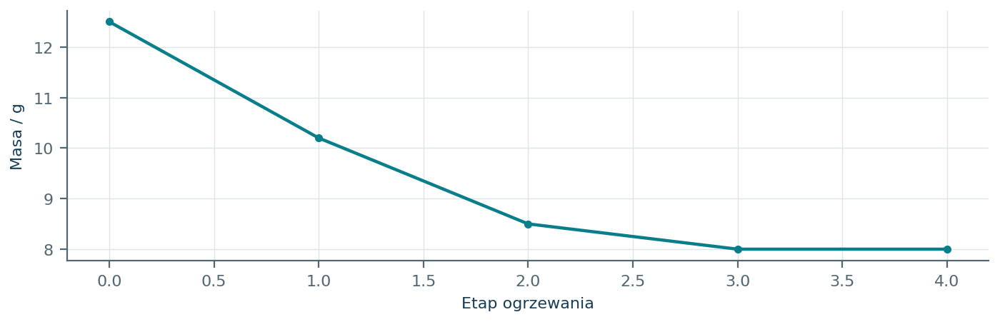
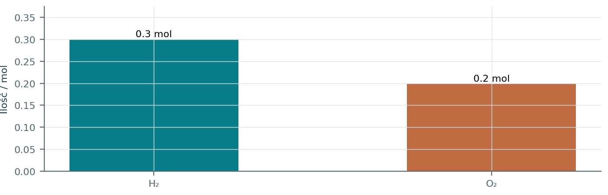
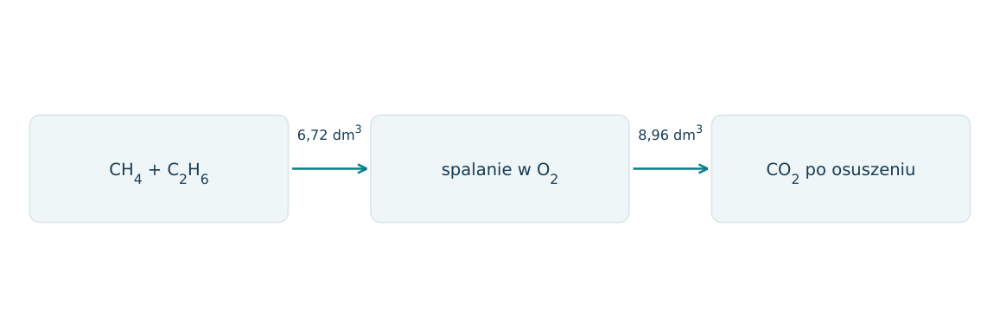
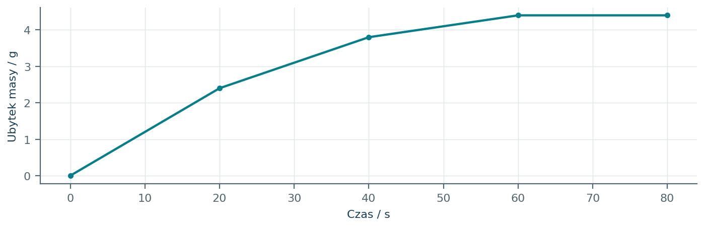
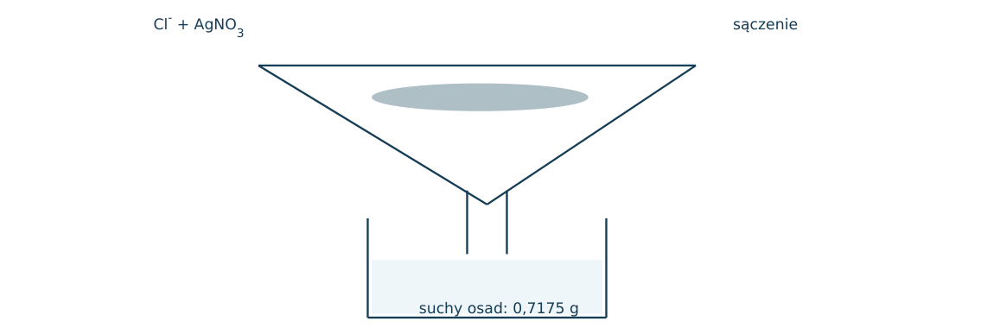
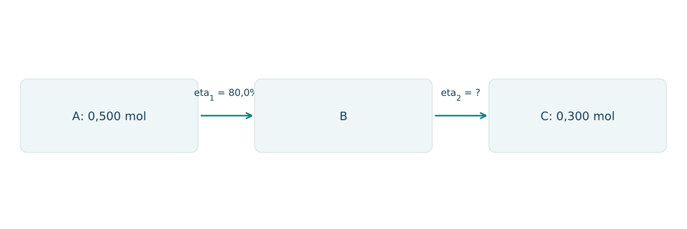

03.01 · 1 pkt
Co jest jednakowe w 1 molu O2 i 1 molu CO2: masa, liczba atomów czy liczba cząsteczek? Uzasadnij.
Rozwiązanie
- Liczba cząsteczek; każdy mol zawiera stałą Avogadra cząsteczek.
50 zadań · 118 pkt · odpowiedzi rozwijane po samodzielnej próbie
← KatalogZadania PDFRozwiązania PDFDane do obliczeń: H 1; C 12; N 14; O 16; Na 23; Mg 24; Al 27; P 31; S 32; Cl 35,5; K 39; Ca 40; Cr 52; Mn 55; Fe 56; Cu 64; Zn 65; Ag 108; Br 80; I 127; Ba 137 (g/mol). NA = 6,02·1023 mol-1. Vm = 22,4 dm3/mol w warunkach normalnych (0°C, 1013 hPa). W 25°C Kw = 10-14. Dane podane w zadaniu mają pierwszeństwo.
Co jest jednakowe w 1 molu O2 i 1 molu CO2: masa, liczba atomów czy liczba cząsteczek? Uzasadnij.
Oceń zdania A i B, wpisując P albo F. Każde zdanie fałszywe popraw lub krótko uzasadnij. A: 1 mol O2 i 1 mol CO2 zawierają tyle samo cząsteczek. B: 1 mol O2 i 1 mol CO2 zawierają tyle samo atomów.
Oblicz liczbę moli atomów tlenu w 0,40 mola Al2(SO4)3.
Oblicz masę i liczbę cząsteczek w 0,25 mola CO2. Przyjmij NA=6,02·1023 mol-1.
Oblicz procent masowy azotu w NH4NO3.
Związek zawiera 40,0% C, 6,67% H i 53,33% O. Ustal wzór empiryczny.
Związek o wzorze empirycznym CH2O ma masę molową 180 g/mol. Ustal wzór rzeczywisty.
Spalono 0,90 g związku zawierającego tylko C, H i O, otrzymując 1,32 g CO2 i 0,54 g H2O. Ustal wzór empiryczny.
Z 8,0 g tlenku miedzi otrzymano 6,4 g Cu. Ustal wzór tlenku, przyjmując M(Cu)=64 g/mol.
Oblicz masę wody krystalizacyjnej w 25,0 g CuSO4·5H2O. Przyjmij M(CuSO4)=160 g/mol.
Ogrzano 12,3 g MgSO4·xH2O do stałej masy 6,0 g bezwodnego MgSO4. Ustal x. M(MgSO4)=120 g/mol.
Zbilansuj spalanie propanu do CO2 i H2O.
Ile moli O2 potrzeba do całkowitego spalenia 0,20 mola etanolu?
Oblicz objętość CO2 w warunkach normalnych powstałego z 10,0 g CaCO3 w nadmiarze HCl.
Oblicz masę Zn potrzebną do otrzymania 4,48 dm3 H2 w warunkach normalnych z HCl. M(Zn)=65 g/mol.
Zmieszano 4,0 g H2 i 16,0 g O2. Ustal substrat ograniczający i masę otrzymanej wody.
Zmieszano 0,30 mola N2 i 0,60 mola H2. Oblicz maksymalną liczbę moli NH3 i ilość pozostałego N2.
Z 20,0 g CaCO3 otrzymano 8,8 g CaO. Oblicz wydajność reakcji CaCO3 → CaO + CO2.
Ile gramów czystego CaCO3 trzeba rozłożyć, aby uzyskać 11,2 g CaO przy wydajności 80%?
Próbka wapienia 25,0 g zawiera 80% CaCO3. Oblicz objętość CO2 w warunkach normalnych po reakcji z nadmiarem kwasu. Pozostałe składniki nie reagują.
Oblicz masę AgCl po zmieszaniu 0,10 mola AgNO3 i 0,15 mola NaCl. M(AgCl)=143,5 g/mol.
Gaz doskonały ma n=0,50 mol, T=300 K i p=100 kPa. Oblicz V, używając R=8,31 kPa·dm3/(mol·K).
W 2,00 dm3 znajduje się gaz pod p=100 kPa w T=300 K. Oblicz n dla R=8,31 kPa·dm3/(mol·K).
Gaz o gęstości 1,25 g/dm3 zmierzono w warunkach normalnych. Oblicz masę molową.
Gęstość gazu względem H2 wynosi 22. Oblicz masę molową gazu przy M(H2)=2 g/mol.
Węglowodór gazowy ma 85,7% C i M=42 g/mol. Ustal wzór sumaryczny.
Spalono całkowicie 5,6 dm3 mieszaniny CH4 i C2H6, uzyskując 8,4 dm3 CO2. Wszystkie objętości zmierzono w tych samych T i p. Oblicz objętości składników.
Mieszanina Mg i Cu o masie 10,0 g wydziela z nadmiarem HCl 4,48 dm3 H2 w warunkach normalnych. Oblicz procent masowy Mg; M(Mg)=24 g/mol.
Do 0,10 mola H2SO4 dodano 0,15 mola NaOH. Oblicz ilość NaOH brakującą do pełnego zobojętnienia obu protonów kwasu.
W zamkniętej kolbie spalono 6,0 g Mg w 8,0 g O2. Oblicz masę MgO i pozostałego tlenu. M(Mg)=24 g/mol.
Uczeń użył 22,4 dm3/mol dla gazu w 25°C i 100 kPa. Wskaż błąd i właściwy sposób obliczenia.
Czy 1 mol dowolnej substancji zajmuje 22,4 dm3 w warunkach normalnych? Uzasadnij.
W otwartym naczyniu CaCO3 reaguje z HCl. Dlaczego masa zawartości naczynia maleje, chociaż masa w reakcji jest zachowana?
Z 2,40 g Mg powstało 3,60 g MgO. Oblicz wydajność; M(Mg)=24, M(MgO)=40 g/mol. Oceń, czy 110% oznaczałoby czysty suchy produkt.
Po dodaniu HCl do 10,0 g mieszaniny CaCO3 i obojętnego piasku ubyło 2,20 g masy wskutek ulatniania wyłącznie CO2. Oblicz zawartość CaCO3.
Z 0,10 mola A można otrzymać teoretycznie 0,10 mola B, a z B tyle samo moli C. Wydajności kolejnych etapów wynoszą 80% i 75%. Oblicz n(C).
Zmieszano 100 cm3 0,20 mol/dm3 AgNO3 i 100 cm3 0,10 mol/dm3 NaCl. Oblicz ilość AgCl i stężenie nadmiarowych Ag+; pomiń rozpuszczalność osadu i przyjmij addytywność objętości.
Rozłożono 0,20 mola KClO3 zgodnie z 2KClO3 → 2KCl + 3O2. Zebrano 5,376 dm3 O2 w warunkach normalnych. Oblicz wydajność.
Próbka gazu zawiera 0,10 mola CO2 i 0,30 mola N2. Oblicz udział objętościowy CO2 i średnią masę molową mieszaniny idealnej.
Próbkę 5,00 g mieszaniny Mg i Cu poddano reakcji z nadmiarem HCl. Zebrano 2,24 dm3 suchego H2 w warunkach normalnych. a) Napisz reakcję. b) Ustal n(Mg). c) Oblicz procenty masowe Mg i Cu. d) Oceń, jak nieszczelność zestawu wpłynęłaby na obliczoną zawartość Mg.
Każdy numer 41-50 oznacza jedno zadanie główne; podpunkty są oceniane osobno.
Mieszaninę Mg i Cu o masie 6,00 g poddano reakcji z nadmiarem HCl w szczelnym zestawie. Zebrano 2,24 dm3 suchego H2 w warunkach normalnych. Pomiń reakcję Cu z HCl i straty gazu.

03.41.1 (2 pkt) Zapisz reakcję i oblicz masę Mg w próbce.
03.41.2 (1 pkt) Oblicz skład procentowy mieszaniny.
03.41.3 (1 pkt) Oceń wpływ pominięcia pary wodnej, gdy odczytano objętość wilgotnego gazu przy tym samym całkowitym ciśnieniu.
Mg+2HCl→MgCl2+H2; n(Mg)=2,24/22,4=0,100 mol, m=2,40 g.
40,0% Mg i 60,0% Cu.
Przypisanie całego gazu H2 zawyżyłoby liczbę moli H2 i obliczoną zawartość Mg.
Próbkę związku zawierającego C, H, O o masie 1,50 g spalono ilościowo. Schemat pokazuje przyrosty mas absorberów. Masa molowa badanego związku wynosi 60 g/mol; absorbery działają selektywnie i całkowicie.

03.42.1 (2 pkt) Oblicz liczby moli atomów C i H w próbce.
03.42.2 (2 pkt) Wyznacz wzór empiryczny oraz rzeczywisty.
03.42.3 (1 pkt) Czy same dane pozwalają odróżnić kwas octowy od metanianu metylu? Uzasadnij.
n(C)=2,20/44=0,0500 mol; n(H)=2·0,90/18=0,100 mol.
m(O)=1,50-0,60-0,10=0,80 g, n(O)=0,0500; CH2O, a przy M=60 wzór C2H4O2.
Nie; obydwa mają C2H4O2 i takie same produkty spalania na mol.
Do reakcji N2+3H2→2NH3 wprowadzono 0,40 mola N2 i 0,90 mola H2. Wykres pokazuje teoretyczne ilości reagentów w funkcji postępu xi, przed ograniczeniem substratem. Przemiana ma wydajność rzeczywistą 80% względem maksimum stechiometrycznego.

03.43.1 (2 pkt) Wskaż substrat ograniczający i maksymalną ilość NH3.
03.43.2 (1 pkt) Oblicz rzeczywistą masę NH3.
03.43.3 (1 pkt) Przyjmując, że cała różnica wydajności wynika z niepełnego przereagowania, oblicz pozostałe N2 i H2.
H2 ogranicza; maksimum NH3=2·0,90/3=0,60 mol.
n=0,80·0,60=0,48 mol; m=8,16 g.
Zużyto N2=0,24 mol i H2=0,72 mol; zostało N2=0,16, H2=0,18 mol.
Próbkę CuSO4·xH2O ogrzewano do usunięcia całej wody, bez rozkładu CuSO4. Wykres pokazuje masę próbki, po ostudzeniu, po kolejnych etapach. Dwa ostatnie pomiary oznaczają stałą masę. M(CuSO4)=160 g/mol.

03.44.1 (2 pkt) Oblicz ilość bezwodnej soli i ilość usuniętej wody.
03.44.2 (1 pkt) Ustal wzór hydratu.
03.44.3 (1 pkt) Jak zmieni się wyznaczone x, jeżeli produkt wchłonie wodę przed ważeniem końcowym?
n(CuSO4)=8,00/160=0,0500 mol; n(H2O)=4,50/18=0,250 mol.
x=0,250/0,0500=5, CuSO4·5H2O.
Zaniży się: końcowa masa przypisana CuSO4 wzrośnie, a obliczona masa utraconej wody zmaleje.
Czysty gaz o masie 1,16 g umieszczono w zbiorniku 1,00 dm3 w 300 K. Odczyt ciśnienia na schemacie wynosi 49,86 kPa. Przyjmij model gazu doskonałego i R=8,31 kPa·dm3/(mol·K).
03.45.1 (2 pkt) Oblicz ilość gazu i jego masę molową.
03.45.2 (1 pkt) Wskaż, czy gaz może być czystym CH4. Uzasadnij wynikiem.
03.45.3 (1 pkt) Czy można bezpośrednio użyć 22,4 dm3/mol? Wyjaśnij.
n=pV/(RT)=0,0200 mol; M=1,16/0,0200=58,0 g/mol.
Nie, M(CH4)=16 g/mol, a z danych wynika 58,0 g/mol.
Nie; T i p są inne niż warunki normalne, dlatego zastosowano równanie Clapeyrona.
Zestaw pokazuje początkowe ilości H2 i O 2. Reakcję przeprowadzono do zużycia substratu ograniczającego, a produkty ochłodzono tak, aby woda się skropliła. Obliczenia oprzyj na 2H2+O 2→2H2O.

03.46.1 (2 pkt) Oblicz ilość skroplonej wody i ilość pozostałego gazu.
03.46.2 (1 pkt) Oblicz masę wody i objętość resztkowego gazu w warunkach normalnych.
03.46.3 (1 pkt) Sprawdź bilans masy początkowej i końcowej.
H2 ogranicza; powstaje 0,30 mol H2O, pozostaje 0,050 mol O 2.
5,40 g H2O; 1,12 dm3 O 2.
Początkowo 0,30·2+0,20·32=7,00 g; końcowo 5,40+0,050·32=7,00 g.
Mieszaninę CH4 i C2H6 o objętości 6,72 dm3 spalono całkowicie. Po usunięciu pary wodnej uzyskano 8,96 dm3 CO2. Wszystkie podane objętości dotyczą warunków normalnych.

03.47.1 (2 pkt) Ułóż dwa równania opisujące ilości składników i oblicz ich liczby moli.
03.47.2 (1 pkt) Oblicz udział objętościowy etanu i masę mieszaniny.
03.47.3 (1 pkt) Oblicz objętość tlenu zużytego w tych samych warunkach.
x+y=0,300; x+2y=0,400; x(CH4)=0,200, y(C2H6)=0,100 mol.
Etan 33,3%; m=0,200·16+0,100·30=6,20 g.
n(O 2)=2·0,200+3,5·0,100=0,750 mol; V=16,8 dm3.
Do próbki wapienia 12,50 g dodano nadmiar HCl. Na wadze zarejestrowano ubytek masy układu, wynikający wyłącznie z ulatniania CO2. Wykres osiągnął plateau 4,40 g. Pozostałe składniki nie reagują.

03.48.1 (2 pkt) Ustal masę CaCO3 i jego procent masowy.
03.48.2 (1 pkt) Napisz jonowe równanie reakcji i oblicz minimalne n(H+).
03.48.3 (1 pkt) Wyjaśnij, dlaczego samo plateau nie dowodzi pełnego przereagowania przy nieznanej ilości kwasu.
n(CO2)=4,40/44=0,100 mol, m(CaCO3)=10,0 g; 80,0%.
CaCO3+2H+→Ca2++CO2+H2O; minimum 0,200 mol H+.
Wydzielanie gazu może ustać także z powodu wyczerpania H+; potrzebna informacja o jego nadmiarze.
Z 50,0 cm3 roztworu zawierającego Cl- strącono AgCl nadmiarem AgNO3. Schemat pokazuje kolejne czynności; po wysuszeniu uzyskano 0,7175 g AgCl. M(AgCl)=143,5 g/mol; strącanie przyjmij ilościowe.

03.49.1 (2 pkt) Oblicz stężenie molowe jonów Cl- w początkowej próbce.
03.49.2 (1 pkt) Wyjaśnij potrzebę przemywania osadu i suszenia do stałej masy.
03.49.3 (1 pkt) Jak obecność innych jonów dających nierozpuszczalne sole Ag wpłynęłaby na wynik dla Cl-?
n(AgCl)=0,00500 mol=n(Cl-); c=0,00500/0,0500=0,100 mol/dm3.
Przemywanie usuwa rozpuszczone domieszki, a suszenie usuwa zmienną ilość wody.
Masa innych osadów zostałaby przypisana AgCl, zwykle zawyżając obliczone stężenie Cl-.
W procesie A→B→C w każdym etapie stosunek molowy reagentu organicznego do produktu wynosi 1: 1. Z 0,500 mola A otrzymano ostatecznie 0,300 mola C. Pierwszy etap miał wydajność 80,0%.

03.50.1 (2 pkt) Oblicz n(B) uzyskane po pierwszym etapie oraz wydajność drugiego.
03.50.2 (1 pkt) Oblicz łączną wydajność procesu i wyjaśnij, dlaczego nie jest sumą obu wydajności.
03.50.3 (1 pkt) Ile moli A potrzeba do otrzymania 0,600 mola C przy tych samych wydajnościach?
n(B)=0,400 mol; eta 2=0,300/0,400·100%=75,0%.
60,0%=0,80·0,75·100%; etap drugi działa tylko na ilości produktu uzyskanej w pierwszym.
n(A)=0,600/0,60=1,00 mol.